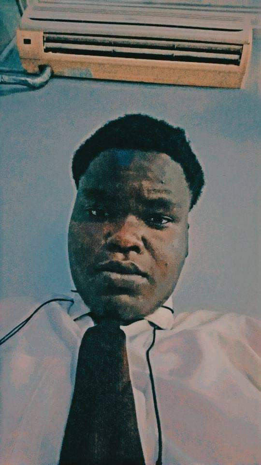
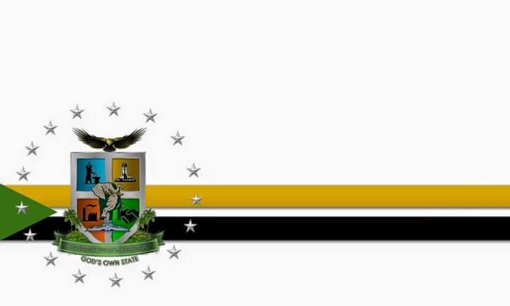

About Me
My name is Joshua Chukwuebuka Akpara, and I am a student at Brigham Young University. I am passionate about web development and constantly seeking to improve my skills. When I am not studying, I enjoy spending time with my family, exploring new technologies, and engaging in outdoor activities
Aba, Abia state
Aba is a city in the southeast of Nigeria and the commercial centre of Abia State. Upon the creation of Abia State in 1991, Aba was divided into two local government areas: Aba South and Aba North. Aba South is the main city centre of Abia State, located in south-east Nigeria. It is located on the Aba River. Aba is made up of many villages such as Aba-Ukwu, Eziukwu-Aba, Obuda-Aba, Umuokpoji-Aba and other villages that have been merged for administrative convenience. Aba was established by the Ngwa clan of the Igbo people in Nigeria as a market town. Later, a military post was placed there by the British colonial administration[2] in 1901. It lies along the west bank of the Aba River and is at the intersection of roads leading to Port Harcourt, Owerri, Umuahia, Ikot Ekpene, and Ikot-Abasi.[3] The city became a collection point for agricultural products following construction of a British-made railway running through it to Port Harcourt. Aba is a major urban settlement and commercial centre in its region, which is surrounded by small villages and towns. The indigenous people of Aba are the Ngwa. Aba is well known for its craftsmen and also the most populous city in the Southeastern Nigeria. As of 2016, Aba had an estimated population of 2,534,265.[1] The state's slogan is "God's Own State".
Official Flag of Abia State